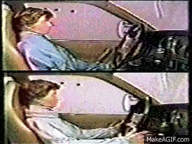

Features of a safe car
It is vital for new drivers to be equipped with a functioning and safe car because they are the most volatile drivers on the roads. Important features include:
ABS
Serviced Airbags

ESC
Seatbelts
Lights and indicators
The ani-lock braking system prevents wheel lockup whilest braking to prevent a car from skidding or losing control.
Airbags protect driver and/or passengers in the case of a crash and it is essential for the airbags to be serviced regularly in order to maintain its funcitonality.
Electronic Stability Control is a feature which monitors and corrects oversteer and understeer. This supports handling in gravel reduces vehicle roll-over.

Whilest it may seem trivial to include, correctly maintained and worn seatbelts are highly effective in reducing injury in an accident. The image shows what could happen in a crash to people who don't wear seatbelts.
The indicators and lights of your vehicle are the most direct way of signaling intent to surrounding cars. If your signals are malfunctioning, the cars around you have no way of telling where and when you are going to turn. This creates high risk for an accident.
How do you be a safe road user?
Being a safe road user means being at attention at all times and abiding by road rules. Here are specifities of what would be expected from safe road users:
| Pedestrians | Cyclists | Passengers |
|---|---|---|
| Don't Jaywalk | Don't wear headphones | Don't distract the driver |
|
Despite contrary belief, crossings are designed so that people in high-traffic areas can safely cross roads. Pedestrians who use crossings are more predictable to drivers, this reduces the risks involved in crossing roads. |
As a cyclist, you are a vulnerable user of the road. Using headphones whilest cycling will reduce your ability to percieve cars that may be in a blind spot. |
Distractions to the driver are extremely dangerous and passengers should ensure that the diver is able to maintain focus. |
| Look for cars | Be predictable | Ensure the driver is safe |
|
Pedestrians should always be aware of their surroundings and vehicles in their proximity, this is to reduce risk of accidents if the driver fails to notice a pedestrian. |
Cyclists should always signal where they are going to turn beforehand so that people driving cars understand which diretion a cyclist will go. |
Do not allow the driver to drive if they are intoxicated or otherwise unfit to drive. |